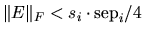
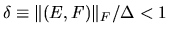

Next:
Preface to the Third
Up:
LAPACK Users' Guide Release
Previous:
Contents
Contents
Index
List of Tables
Matrix types in the LAPACK naming scheme
Driver routines for linear equations
Driver routines for linear least squares problems
Driver routines for generalized linear least squares problems
Driver routines for standard eigenvalue and singular value problems
Driver routines for generalized eigenvalue and singular value problems
Computational routines for linear equations
Computational routines for linear equations (continued)
Computational routines for orthogonal factorizations
Computational routines for the symmetric eigenproblem
Computational routines for the nonsymmetric eigenproblem
Computational routines for the singular value decomposition
Reduction of generalized symmetric definite eigenproblems to standard problems
Computational routines for the generalized symmetric definite eigenproblem
Computational routines for the generalized nonsymmetric eigenproblem
Computational routines for the generalized singular value decomposition
Speed in megaflops of Level 2 and Level 3 BLAS operations on an SGI Origin 2000
Characteristics of the Compaq/Digital computers timed
Characteristics of the IBM computers timed
Characteristics of the Intel computers timed
Characteristics of the SGI computer timed
Characteristics of the Sun computers timed
Speed in megaflops of DGETRF for square matrices of order
n
Speed in megaflops of DPOTRF for matrices of order
n
with UPLO = `U'
Speed in megaflops of DSYTRF for matrices of order
n
with UPLO = `U' on an IBM Power 3
Speed in megaflops of DGEQRF for square matrices of order
n
Speed in megaflops of reductions to condensed forms on an IBM Power 3
Execution time and Megaflop rates for DGEMV and DGEMM
``Standard'' floating point operation counts for LAPACK drivers for
n
-by-
n
matrices
Performance of DGESV for
n
-by-
n
matrices
Performance of DGEEV, eigenvalues only
Performance of DGEEV, eigenvalues and right eigenvectors
Performance of DGESDD, singular values only
Performance of DGESVD, singular values and left and right singular vectors
Performance of DGESDD, singular values and left and right singular vectors
Values of Machine Parameters in IEEE Floating Point Arithmetic
Vector and matrix norms
Bounding One Vector Norm in Terms of Another
Bounding One Matrix Norm in Terms of Another
Asymptotic error bounds for the nonsymmetric eigenproblem
Global error bounds for the nonsymmetric eigenproblem assuming 
Asymptotic error bounds for the generalized nonsymmetric eigenvalue problem
Global error bounds for the generalized nonsymmetric eigenvalue problem assuming .
Use of the block parameters NB, NBMIN, and NX in LAPACK
Preface to the Third Edition
Preface to the Second Edition
Susan Blackford
1999-10-01